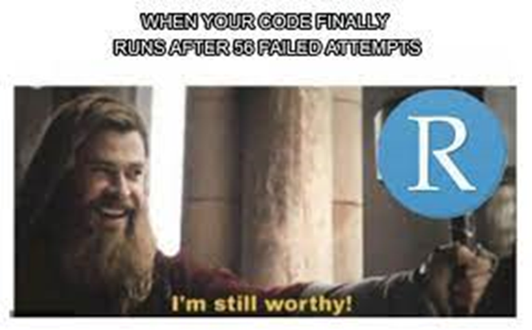

class: center, middle, inverse, title-slide .title[ #  THE Midterm ] .author[ ### <font size="10"> Colby Phillips </font> ] --- <style> .remark-slide-content { background-color: #FFFFFF; border-top: 80px solid #F9C389; font-size: 17px; font-weight: 300; line-height: 1.5; padding: 1em 2em 1em 2em } .inverse { background-color: #696767; border-top: 80px solid #696767; text-shadow: none; background-image: url(https://github.com/goodekat/presentations/blob/master/2019-isugg-gganimate-spooky/figures/spider.png?raw=true); background-position: 50% 75%; background-size: 150px; } .your-turn{ background-color: #8C7E95; border-top: 80px solid #F9C389; text-shadow: none; background-image: url(https://github.com/goodekat/presentations/blob/master/2019-isugg-gganimate-spooky/figures/spider.png?raw=true); background-position: 95% 90%; background-size: 75px; } .title-slide { background-color: #F9C389; border-top: 80px solid #F9C389; background-image: none; } .title-slide > h1 { color: #111111; font-size: 40px; text-shadow: none; font-weight: 400; text-align: left; margin-left: 15px; padding-top: 80px; } .title-slide > h2 { margin-top: -25px; padding-bottom: -20px; color: #111111; text-shadow: none; font-weight: 300; font-size: 35px; text-align: left; margin-left: 15px; } .title-slide > h3 { color: #111111; text-shadow: none; font-weight: 300; font-size: 25px; text-align: left; margin-left: 15px; margin-bottom: -30px; } </style> #Most Common Ages Admitted! .left-code[ ```r df %>% ggplot()+ geom_density(mapping = aes(x = age)) + labs(x="Age", y="Density", title = "Age Distribution", caption="Most common ages admitted") ``` ] .right-plot[ <!-- --> ] --- #Most Common Ages Per Provider! .left-code[ ```r df %>% ggplot()+ geom_density(mapping = aes(x = age, color=provider))+ labs(x="Age", y="Density", title = "Age Distribution by Provider", caption="What ages are most common for each provider") ```  ] --- #States with Most People Admitted! .left-code[ ```r df %>% ggplot()+ geom_bar(mapping = aes(x = pt_state))+ labs(x="State of Patient", y="Count", title = "State Location of Patients Distribution", caption="Which states have the most people admitted") ``` ] .right-plot[ <!-- --> ] --- #Most Common Gender Admitted! .left-code[ ```r df %>% ggplot()+ geom_bar(mapping = aes(x = sex))+ labs(x="Sex", y="Count", title = "Sex Distribution", caption="Gender most commonly admitted") ``` ] .right-plot[ <!-- --> ] --- #Most Commonly Used Provider! .left-code[ ```r df %>% ggplot()+ geom_bar(mapping = aes(x = provider))+ labs(x="Provider", y="Count", title = "Provider Distribution", caption="Most commonly used provider") ``` ]  --- #Ages with Highest Charges! .left-code[ ```r df %>% ggplot()+geom_point(aes(x=age, y=tot))+ labs(x="Age", y="Total Chargers", title = "Chargers by Age", caption="Ages with the highest amount of charges") ``` ] .right-plot[ <!-- --> ] --- #Ages with Longest Stays! .left-code[ ```r df %>% ggplot()+geom_point(aes(x=age, y=los))+ labs(x="Age", y="Length of Stay", title = "Length of Stay by Age", caption="Ages with the longest stays") ``` ] .right-plot[ <!-- --> ] --- #Most Commonly Used Providers by Sex! .left-code[ ```r df %>% ggplot()+ geom_bar(mapping=aes(x=sex, fill=provider), position = 'fill')+ labs(x="Sex", y="Count", title = "Provider Used by Sex", caption="Most commonly used providers by each sex") ``` ]  --- #Ages of Admiited Patients by Sex! .left-code[ ```r df %>% ggplot()+ geom_boxplot(mapping = aes(x = age, y = sex))+ labs(x="Age", y="Sex", title = "Age by Sex", caption="Ages of admitted patients by sex") ``` ]  --- #Ages with Highest Amount of Charges! .left-code[ ```r df %>% ggplot()+geom_smooth(aes(x=age, y=tot))+ labs(x="Age", y="Total Chargers", title = "Chargers by Age", caption="Ages with the highest amount of charges") ``` ] .right-plot[ ``` ## `geom_smooth()` using method = 'gam' and formula 'y ~ s(x, bs = "cs")' ``` <!-- --> ] --- #Gender Most Often Admitted by Age! .left-code[ ```r library(gganimate) df %>% ggplot()+ geom_bar(mapping = aes(x = sex)) + transition_states(age) + labs(x="Sex", y="Count", title = "Sex Distribution by Age", caption="Gender most commonly admitted for each age") ``` ] .right-plot[ <!-- --> ] --- #Result Comparison! .left-code[ ```r results <- resamples(list('Decision Tree' = tree_approach2,'Random Forest' = forest_ranger)) bwplot(results) ``` <!-- --> ] .right-plot[ <!-- --> ] --- #Confusion Matrix Comparison! .left-code[ ```r pred1 <- predict(tree_approach2, df_test) cm1 <- confusionMatrix(data = pred1, reference = df_test$target) cm1$overall[1] ``` ``` ## Accuracy ## 0.8141113 ``` ] --- #New Model Comparison! .left-code[ ```r results <- resamples(list('Decision Tree' = tree_approach3,'Random Forest' = forest_ranger1)) bwplot(results) ``` <!-- --> ] .right-plot[ <!-- --> ] --- #New Model Cofusion Matirx! .left-code[ ```r pred2 <- predict(tree_approach2, df_test) cm2 <- confusionMatrix(data = pred2, reference = df_test$target) cm2$overall[1] ``` ``` ## Accuracy ## 0.3127826 ``` ] .right-plot[ ``` ## Accuracy ## 0.3127826 ``` ] --- #Fun Issues! - KNITTING!!! - Plots not doing what the code says!